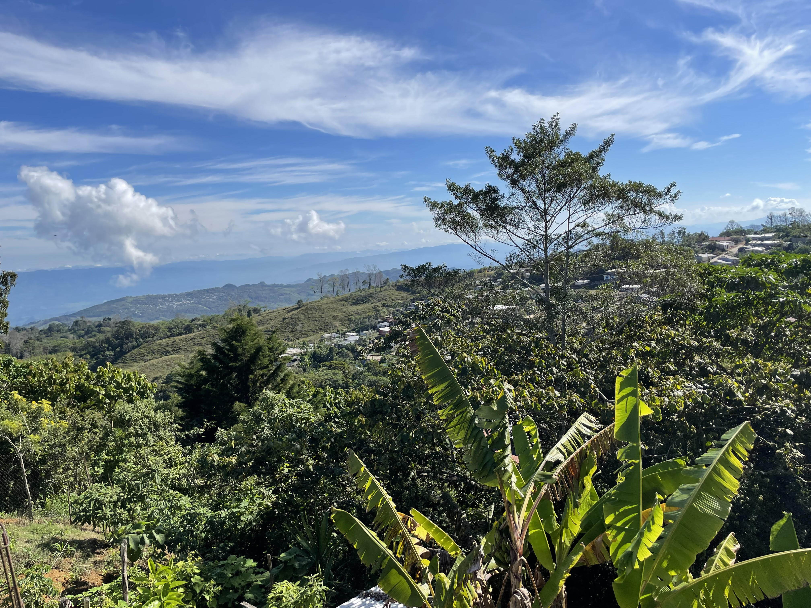

main • research • teaching • cv • translations • email • en español
Together with poet and writer Charlotte Friedman, I have been translating the work of Ch'ol poet, Juana Peñate Montejo. Juana Peñate Montejo is a poet, writer and translator from Tumbalá, Chiapas, Mexico who won the Premio de Literaturas Indígenas de América in 2020 for her collection of poetry Isoñil Ja'al/Danza de la Lluvia (Dance of the rain), written in Ch'ol and self-translated to Spanish.

View from Juana Peñate's roof, January 2022, Tumbalá, Mexico.
Charlotte and I have translated Ipusik'al Matye'lum/Corazón de Selva (Heart of a wild land, published in 2013 by Pluralia) as well as Isoñil Ja'al/Danza de la Lluvia (Dance of the rain, to be published this year by the University of Guadalajara).
Juana Peñate Montejo is a Ch’ol poet, writer, translator, educator and cultural promoter from Emiliano Zapata, Tumbalá, Chiapas, Mexico. She has authored several books of poetry in Ch’ol with self-translations in Spanish including Mi nombre ya no es silencio (My name is no longer silence published) by Coneculta in 2002, Ipusik’al Matye’lum/Corazón de Selva (Heart of a wild land), first published by Pluralia in 2013, and most recently Isoñil Ja’al/Danza de la Lluvia (Dance of the rain), which won the 2020 Premio de Literaturas Indígenas de América and will be published this year by the University of Guadalajara.